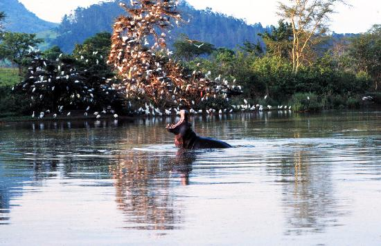

Esuatini en fotos
¿Dónde se encuentra Esuatini?
Noticias recientes
Muere el primer ministro de Eswatini, quien contrajo la COVID-19 hace un mes
El alto funcionario del país africano fue trasladado a Sudáfrica el 1 de diciembre para recibir tratamiento por el nuevo coronavirus, pero no logró superar la enfermedad.
Israel confirmó el primer caso de la nueva variante del COVID-19 en su territorio y prohibió el ingreso de viajeros de siete países de África
El primer ministro, Naftali Bennett, ordenó incluir a Sudáfrica, Lesotho, Botswana, Zimbabwe, Mozambique, Namibia y Eswatini en la lista roja de países por la situación sanitaria. Hay otros dos casos sospechosos
Estados Unidos recomienda no viajar a ocho países africanos por Ómicron, la nueva variante del COVID-19
Los CDC elevaron el nivel de riesgo de volar a Sudáfrica, Zimbabue, Namibia, Mozambique, Malaui, Lesoto, Eswatini y Botsuana
Darias anuncia nuevas restricciones en los vuelos a España procedentes de países del sur de África afectados por Ómicron
Esta decisión llega después de que este lunes entrara en vigor una orden que obliga a los viajeros procedentes de Botswana, Eswatini, Lesotho, Mozambique, Namibia, Sudáfrica y Zimbabwe a cumplir una cuarentena de diez días
España prorrogó hasta el 26 de diciembre la cuarentena a los viajeros procedentes de países africanos considerados de riesgo por la variante Ómicron
La medida afecta a los pasajeros de los vuelos que lleguen a la nación ibérica, con o sin escalas, desde cualquier aeropuerto situado en Botsuana, Eswatini, Lesotho, Mozambique, Namibia, Sudáfrica y Zimbabue
Meteorología

- Tiempo: nubes dispersas
- Temperatura: 10.33ºC
- Temperatura mínima: 10.33ºC
- Temperatura máxima: 10.33ºC